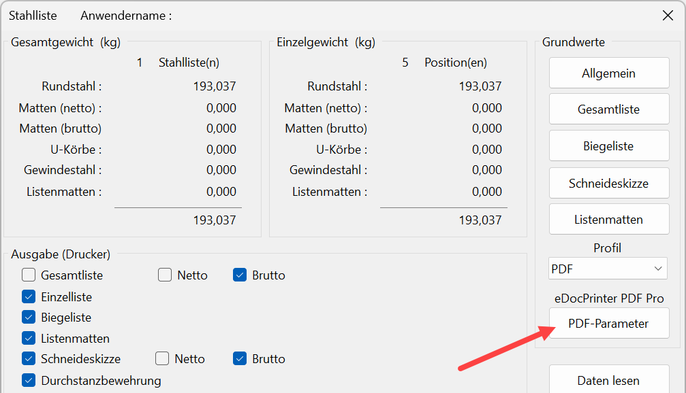
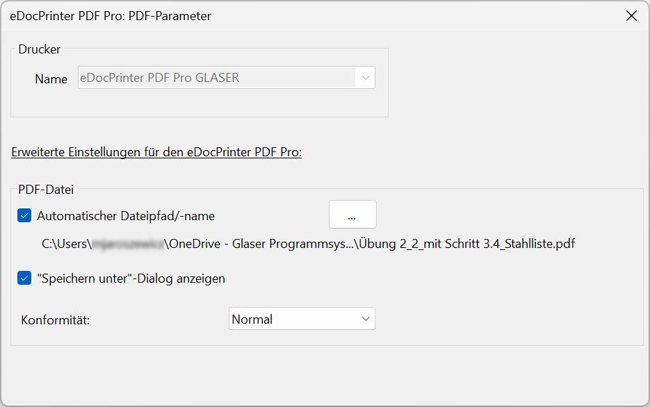
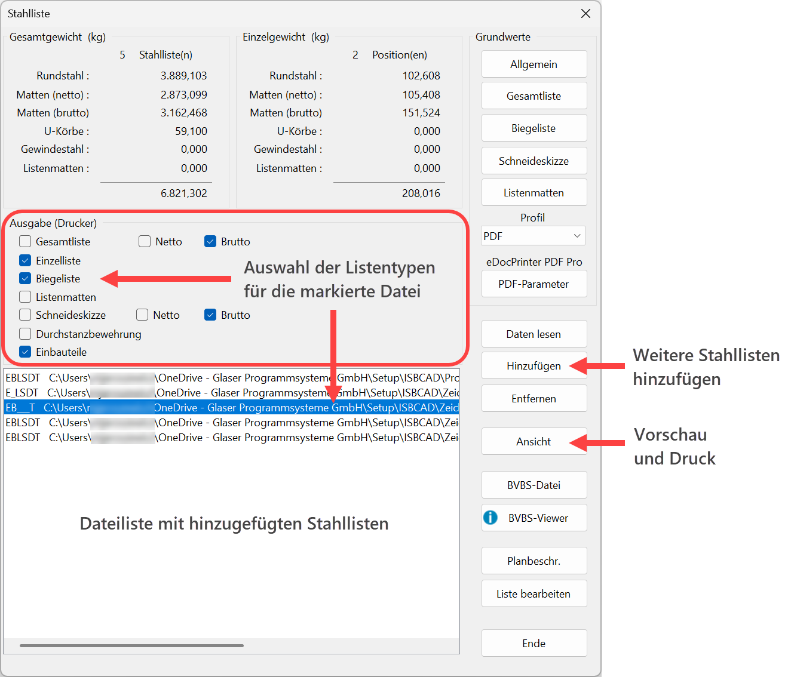
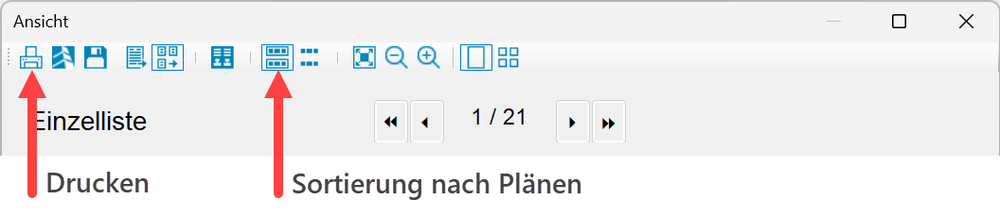
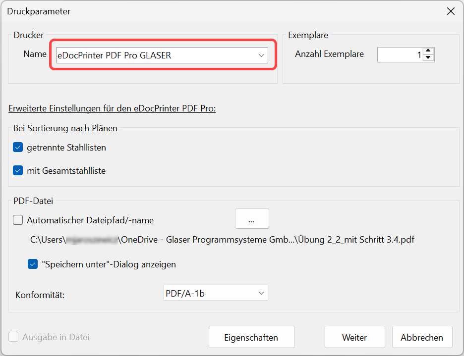

Wenn Sie den eDocPrinter PDF Pro GLASER als Druckertreiber nutzen, können Sie die in der Dateiliste enthaltenen Stahllisten in einer einzelnen PDF-Datei oder in getrennten PDF-Dateien ausgeben. Geben Sie zudem an, ob die Gesamtliste in einer separaten PDF-Datei ausgedruckt werden soll. Sie können auch nur die Stahlliste der aktuellen Zeichnung ausgeben.
1.Optional: Voreinstellungen - eDocPrinter PDF Pro GLASER
Die hier getroffenen Voreinstellungen gelten für die Funktion Direktausgabe und die Ausgabe über [Ansicht → Druckparameter].
Falls der Drucktreiber eDocPrinter PDF Pro GLASER eingerichtet ist, wird dieser als PDF-Drucker verwendet. Sollte dieser nicht eingerichtet sein, wird der eDocPrinter PDF Pro Standarddrucker verwendet. Da die Stahllisten-Ausgabe im A4-Format erfolgt, können beide Drucker verwendet werden. Wenn der eDocPrinter nicht auf Ihrem System installiert ist, ist die Schaltfläche PDF-Parameter ausgegraut.
§Klicken Sie im Dialog Stahlliste auf PDF-Parameter.
 |
§Im Dialog ist der Drucker vorausgewählt. Passen Sie mit den Optionen die Stahllistenausgabe an:
 Siehe: PDF-Parameter |
2.Stahllisten auswählen
§Fügen Sie im Dateilisten-Bereich die auszugebenden Stahllisten ein. Mit Hinzufügen können Sie Stahllisten (*.stl) in die Dateiliste laden.
§Wählen Sie im Dialogbereich Ausgabe (Drucker) die Listentypen, die ausgegeben werden sollen.
§Klicken Sie nach der Auswahl auf die Schaltfläche Ansicht, um einen Dialog mit einer Voransicht der Stahllisten zu öffnen.
 |
3.Stahllisten drucken
§Um die Stahllisten in jeweils einzelnen PDF-Dateien ausgeben zu können, aktivieren Sie im Dialog Ansicht die Option Sortierung nach Plänen.
§Klicken Sie auf das Druckersymbol, um den Dialog Druckparameter zu öffnen.
 |
§Stellen Sie im Dialog den eDocPrinter PDF Pro GLASER ein.
 |
§Wählen Sie die entsprechenden Ausgabeoptionen.
Siehe: Stahlliste Ansicht
§Um die Ausgabe zu starten, klicken Sie auf Weiter.
Siehe auch:
·Stahllisten drucken oder auf Zeichnung platzieren
·Stahlliste direkt ausgeben (Direktausgabe-Funktion)
Zugehörige Referenzen: